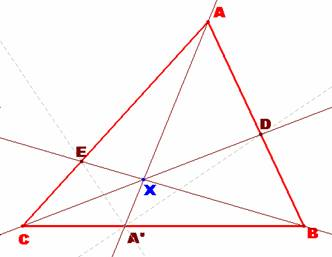

Problema 277
[1] Sea A* un punto interior de BC en
el triángulo ABC. Las bisectrices
interiores de los ángulos BA*A y CA*A intersecan a AB y a AC en D y E
respectivamente.
Demostrar que AA*, BE y CD son concurrentes.
Hasta aquí lo publicado en Crux y en Yiu.
Nuevas cuestiones:
[2] Por Loeffler: Lugar geométrico
del punto de concurrencia si ABC es equilátero.
[3] Por J.B. Romero : Lugar geométrico de los baricentros, circuncentros, ortocentros e incentros de los triángulos A*ED, rectángulos en A* cuando A* varia sobre BC.
Se admiten soluciones de cualquiera de los apartados [El director].
Propuesto
por Juan Bosco Romero Márquez, profesor colaborador de
(Publicado en su versión original en Crux Mathematicorum, probema 2840, y en http://www.math.fau.edu/yiu/RecreationalMathematics.pdf
(pág 300-925), de Paul Yiu, Verano de 2003)
Solución
de F. Damián Aranda Ballesteros, profesor del IES Blas Infante de Córdoba,
España.
|
 |
[1].
AA*, BE y CD son concurrentes.
En efecto, veremos que se verifica la
relación (*)
entre los segmentos que determinan las cevianas en sus respectivos lados opuestos.
Por ser EA’ la bisectriz del ángulo CA’A, se
tiene que:
Por ser DA’ la bisectriz del ángulo BA’A, se
tiene que:
Por tanto, sustituyendo ambas identidades en
el primer miembro de (*) obtenemos: